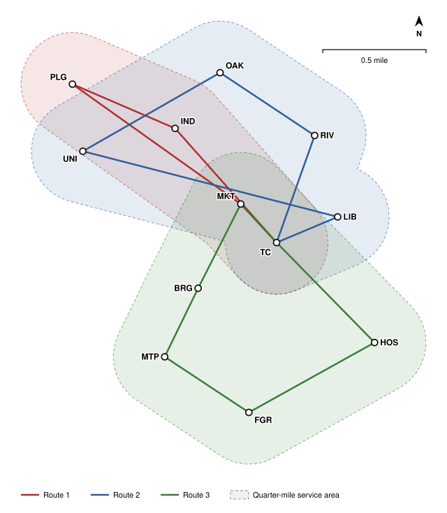
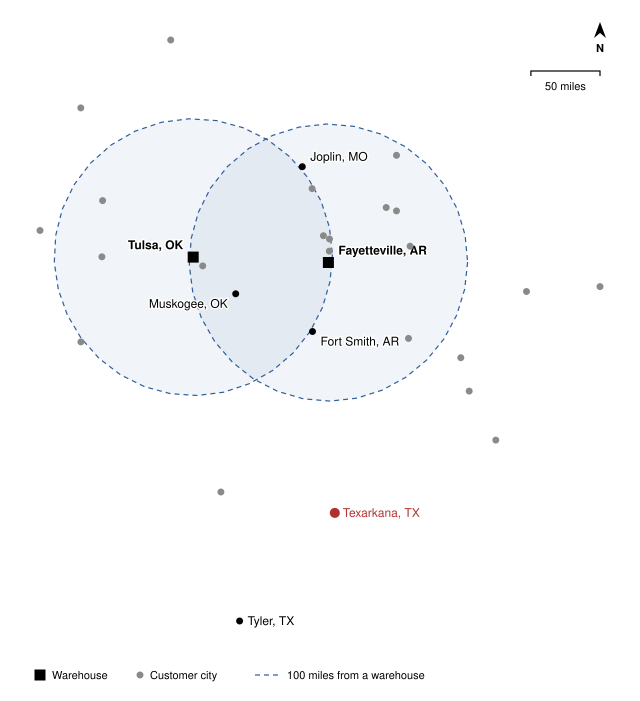

CREATE EXTENSION IF NOT EXISTS postgis;Appendix J — Spatial Data in PostgreSQL
NoteLearning objectives
After reading this appendix you should be able to:
- explain why a latitude and a longitude stored as two numbers cannot answer questions of distance or nearness
- install PostGIS in a database and give an existing table a location column
- choose between the
geometryandgeographytypes, and name the spatial reference system of a location - write queries that measure a distance, find the nearest location, select the locations within a distance, and test whether a location lies inside an area
- join two tables on a spatial condition, and build the distance matrix a logistics model reads
- recognize the data conditions under which a spatial query gives a wrong answer
Many of the questions an industrial engineer asks of operational data are questions about places. Which warehouse is nearest each customer? How far does a truck travel to serve a region? Which stops lie within a walk of a new employer? A civil engineer asks the same kind of question about roads, transit routes, and service areas. Each one needs a distance, a nearness, or a boundary, and an ordinary table answers none of them well.
This appendix shows how PostgreSQL stores and queries locations through PostGIS, an extension that adds spatial types and functions to the database. PostGIS is not part of the SQL standard, and every function in this appendix whose name begins with ST_ is PostGIS’s. Its functions follow the Open Geospatial Consortium’s Simple Features specification, which other database systems also implement, so the ideas carry over even where the names differ. We work first with Millbrook Transit’s stops and routes, and then with the cities of HG Industries’ customers and warehouses.
TipFollowing along
The appendix uses two of your databases. The Millbrook Transit queries run in dbconcepts_transit (Section C.10), after you run sql/spatial/sp-transit-location.sql from the companion code in it. The HG Industries queries run in dbconcepts_history (Section A.5), after you run sql/spatial/sp-hg-locations.sql in it. Both scripts install PostGIS in their database, which needs PostGIS installed with your server (Section J.2). Neither changes a table of the book’s database, and a reload of the book’s database leaves what they add in place. Reloading Millbrook Transit removes its location column, so run sp-transit-location.sql again after a reload.
J.1 Why locations need a type of their own
Recall from Section 5.3.1 that a point of a transit network records a latitude and a longitude as two attributes, since a request for the stop nearest a rider computes a distance from both. Each is an ordinary number in transit.point, and a query can compare one latitude with another. Computing a distance from them, however, is harder than it looks.
A first attempt treats the two numbers as coordinates on a flat sheet and applies the distance formula of plane geometry. The following query uses it to ask which of two stops, Maple Turnaround and Riverside Apartments, lies nearer the Plant Gate stop.
SELECT b.point_code AS stop, b.name,
ROUND(SQRT(POWER(b.latitude - a.latitude, 2)
+ POWER(b.longitude - a.longitude, 2)), 4)
AS degrees
FROM transit.point AS a, transit.point AS b
WHERE a.point_code = 'PLG'
AND b.point_code IN ('MTP', 'RIV')
ORDER BY degrees;| stop | name | degrees |
|---|---|---|
| MTP | Maple Turnaround | 0.0207 |
| RIV | Riverside Apartments | 0.0213 |
Table J.1 puts Maple Turnaround nearer. The answer is wrong, for two reasons. First, the result is in degrees, not in miles, and no single factor turns it into miles. Second, a degree of longitude is shorter than a degree of latitude everywhere except at the equator. The meridians meet at the poles, so at Millbrook’s latitude, about 36 degrees north, a degree of longitude is about 0.81 of a degree of latitude. The formula counts an east-west difference as if it were a north-south one, and Riverside Apartments lies mostly east of Plant Gate. Thus, the flat formula misranks the two stops, as Section J.5 shows by measuring them correctly.
A spatial type removes both faults. It holds a location as one value, it comes with functions that know the shape of the Earth and report distances in meters, and it can be indexed so that “near” is found quickly. PostGIS, open source under the GNU General Public License, is the most widely used spatial extension for PostgreSQL, and much GIS software, QGIS among it, reads and writes PostGIS tables directly. The next section installs it.
J.2 Installing PostGIS
PostGIS is installed with the server and then enabled in each database that uses it. How it is installed depends on how you installed PostgreSQL (Section A.1):
- Postgres.app (macOS) includes PostGIS; there is nothing to install.
- Homebrew (macOS): run
brew install postgis. - The EDB installer (Windows): run Stack Builder, which the installer offers at its end and which is also in the Start menu, choose your server, and select PostGIS under Spatial Extensions. Section A.1 says that Stack Builder is not needed; this appendix is the exception.
- Linux: install your distribution’s PostGIS package for your server’s version, for example
postgresql-18-postgis-3.
An extension belongs to one database. The following statement enables PostGIS in the database you are connected to, and the companion scripts begin with it. Creating an extension needs a user allowed to create one, which the user your PostgreSQL installation made for you is.
The check is a query that only PostGIS can answer:
SELECT postgis_lib_version() AS postgis;| postgis |
|---|
| 3.6.3 |
If the statement fails with a message that the extension’s control file cannot be found, PostGIS is not installed with the server, and the steps above come first. Notice that enabling PostGIS in dbconcepts_transit does not enable it in dbconcepts_history; each companion script enables it in its own database.
J.3 Points, lines, and polygons
PostGIS stores three kinds of shape that this appendix uses. A point is one location, such as a transit stop or a city. A line string is a sequence of points joined by straight lines, such as a route through its stops. A polygon is an area bounded by a closed line, such as a service area or a county. Each is one value of a column, as a date or a number is.
A shape is written for people in well-known text, a standard notation that names the kind of shape and lists its coordinates. The Transit Center is POINT(-94.1574 36.0621). Notice the order: well-known text, like nearly every GIS, writes the longitude first, as the horizontal coordinate x, and the latitude second, as y. Writing them the other way round is the commonest mistake with spatial data, and PostGIS does not refuse it. The following query makes a geography point from the Transit Center’s coordinates in the wrong order.
SELECT ST_AsText(ST_MakePoint(36.0621,
-94.1574)::geography) AS location;| location |
|---|
| POINT(36.0621 -85.8426) |
No latitude lies beyond 90 degrees, so -94.1574 cannot be one. PostGIS does not stop; it moves the value into range, with no more than a notice that most tools do not show, and Table J.3 puts the Transit Center near the South Pole. Where both numbers are below 90, as in much of Europe, the exchanged point is not even moved: it is valid, and wrong. Thus, the order of the coordinates is yours to get right.
Coordinates mean nothing until the system they belong to is named. A spatial reference identifier (SRID) is the number that names it. The number 4326 names the latitude and longitude of the GPS system, measured in degrees, and every location in this appendix uses it. Surveyors and civil engineers often work instead in a projected system, such as the Arkansas North state plane system, whose coordinates are feet east and north of an origin. PostGIS converts between systems with ST_Transform, which this appendix does not need.
PostGIS offers two types for a shape. A value of type geometry is measured on a flat plane, in the units of its coordinates, so a distance between two latitude and longitude points comes out in degrees, with the fault of Section J.1. A value of type geography is measured on the Earth’s surface, and its distances and areas come out in meters. For locations given as latitude and longitude, you should use geography unless a function you need exists only for geometry. This appendix uses geography for every stored location, and converts to geometry only to build a line.
Table J.4 lists the functions this appendix uses.
| Function | Returns |
|---|---|
ST_MakePoint(x, y) |
A point from a longitude and a latitude, in that order |
ST_SetSRID(shape, srid) |
The shape, labeled with a spatial reference system |
ST_AsText(shape) |
The shape in well-known text |
ST_AsGeoJSON(shape) |
The shape as a GeoJSON document |
ST_Distance(a, b) |
The distance between two shapes; meters for geography |
ST_DWithin(a, b, d) |
True if the shapes lie within d of each other |
ST_MakeLine(point) |
As an aggregate, a line string through the points, in order |
ST_Length(line) |
The length of a line; meters for geography |
ST_Buffer(shape, d) |
The area within d of the shape |
ST_Covers(a, b) |
True if no part of b lies outside a |
The next section uses the first three to give Millbrook’s stops a location.
J.4 Giving the stops a location
The companion script sql/spatial/sp-transit-location.sql adds a location column to transit.point. After enabling PostGIS, it runs one statement:
ALTER TABLE transit.point
ADD COLUMN IF NOT EXISTS location
geography(Point, 4326)
GENERATED ALWAYS AS (
ST_SetSRID(ST_MakePoint(longitude,
latitude),
4326)::geography
) STORED;Let’s read it from the inside out. ST_MakePoint builds a point from the stop’s longitude and latitude, longitude first. ST_SetSRID labels the point with SRID 4326, so that PostGIS knows the numbers are GPS degrees, and the cast ::geography makes it a geography value. The column’s type, geography(Point, 4326), accepts only points in that system. Recall from Section 8.6 that ALTER TABLE ... ADD COLUMN adds a column to a table that already holds rows; IF NOT EXISTS lets the script run twice without error.
The new column holds the same fact as latitude and longitude, which is the redundancy of Section 7.2: a stop moved by an UPDATE of its latitude could keep its old location. The clause GENERATED ALWAYS AS (...) STORED prevents that. It makes location a generated column, which the database computes from the other columns of the row whenever the row is written, and which no statement may set directly. Thus, the three columns cannot disagree. Generated columns are in the SQL standard, and PostgreSQL implements them.
The following query shows two stops’ coordinates beside their locations, written as well-known text.
SELECT point_code, latitude, longitude,
ST_AsText(location) AS location
FROM transit.point
WHERE point_code IN ('TC', 'PLG')
ORDER BY point_code;| point_code | latitude | longitude | location |
|---|---|---|---|
| PLG | 36.07320 | -94.17510 | POINT(-94.1751 36.0732) |
| TC | 36.06210 | -94.15740 | POINT(-94.1574 36.0621) |
Table J.5 shows each location with its longitude first. Notice that the query selects ST_AsText(location), not location itself. A spatial value is stored in a binary form, and a query that selects it shows a long string of hexadecimal digits that no one can read. DataGrip and DBeaver can also draw a spatial column on a map in their result viewers; each tool’s documentation describes how. The next section measures distances between the locations.
J.5 Distance and length
ST_Distance between two geography values returns the distance between them along the Earth’s surface, in meters. A mile is 1,609.344 meters, so dividing by that number gives miles. The following query repeats the question of Table J.1 with it.
SELECT b.point_code AS stop, b.name,
ROUND((ST_Distance(a.location, b.location)
/ 1609.344)::NUMERIC, 2) AS miles
FROM transit.point AS a, transit.point AS b
WHERE a.point_code = 'PLG'
AND b.point_code IN ('MTP', 'RIV')
ORDER BY miles;| stop | name | miles |
|---|---|---|
| RIV | Riverside Apartments | 1.20 |
| MTP | Maple Turnaround | 1.39 |
Table J.6 reverses the order of Table J.1: Riverside Apartments is the nearer stop. The cast to NUMERIC lets ROUND keep two decimal places, since ST_Distance returns a floating-point number. The distance is a straight line over the ground, the distance a bird would fly, not the distance a bus drives. That limit is what the following example puts to use.
Example J.1 (Checking recorded segment lengths) The system. Millbrook Transit records each segment of a route in transit.segment, with the stops at its two ends and its length in miles, length_miles, as driven on the road.
The request. The planner who maintains the network asks whether any recorded length is impossible.
A road between two stops can be longer than the straight line between them, and never shorter. Thus, a segment whose recorded length is less than the straight-line distance between its stops is recorded wrongly. The query joins each segment to its two stops, as Section 3.6 joins any table to two rows of another, and keeps the segments that fail the test. The condition compares meters with meters.
SELECT s.segment_pk AS segment,
a.point_code AS from_stop,
b.point_code AS to_stop,
s.length_miles AS recorded,
ROUND((ST_Distance(a.location, b.location)
/ 1609.344)::NUMERIC, 2) AS straight
FROM transit.segment AS s
JOIN transit.point AS a
ON a.point_pk = s.start_point_fk
JOIN transit.point AS b
ON b.point_pk = s.end_point_fk
WHERE s.length_miles * 1609.344
< ST_Distance(a.location, b.location)
ORDER BY s.segment_pk;| segment | from_stop | to_stop | recorded | straight |
|---|---|---|---|---|
| 6 | LIB | UNI | 1.25 | 1.28 |
| 7 | UNI | OAK | 0.75 | 0.77 |
The check. Millbrook has 15 segments, so the query considers 15 rows and can return at most 15. Table J.7 returns two, and in each the straight distance exceeds the recorded length, as the condition requires.
Interpretation. The segments from the Public Library to University Center and from University Center to Oak Park are each recorded about 0.02 miles shorter than any road between their stops could be. Either the lengths or the stops’ coordinates are wrong, and someone must measure again. Recall that route.distance_miles is the sum of its segments’ lengths, so route 2’s recorded distance is suspect as well.
Where it breaks. The test finds only lengths that are too short. A length recorded far too long, such as 12.5 for 1.25, passes it. A coordinate entered with its latitude and longitude exchanged puts a stop in Antarctica and makes every segment touching it fail. A segment whose recorded length is close to its straight line deserves a look too, since few roads run straight. Recall from Table J.3 that the exchanged coordinates are not refused, so nothing but a check like this one finds them.
A route is a line string through its stops. The aggregate form of ST_MakeLine builds one from a group of points, in the order its own ORDER BY gives, as ARRAY_AGG and STRING_AGG take an order within the group (Section 4.2). It works on geometry, so each location is cast to that type first. The following query builds each route’s line through the stops at which its segments start, in sequence order. Every Millbrook route is a loop that returns to the Transit Center, so ST_AddPoint appends the line’s first point to its end to close it, and ST_Length measures it, cast back to geography so the answer is in meters.
WITH route_line AS (
SELECT s.route_fk,
ST_MakeLine(p.location::geometry
ORDER BY s.sequence_number)
AS line
FROM transit.segment AS s
JOIN transit.point AS p
ON p.point_pk = s.start_point_fk
GROUP BY s.route_fk)
SELECT r.route_number,
r.distance_miles AS recorded,
ST_NPoints(l.line) AS stops,
ROUND((ST_Length(ST_AddPoint(l.line,
ST_StartPoint(l.line))::geography)
/ 1609.344)::NUMERIC, 2) AS line_miles
FROM route_line AS l
JOIN transit.route AS r ON r.route_pk = l.route_fk
ORDER BY r.route_number;| route_number | recorded | stops | line_miles |
|---|---|---|---|
| 1 | 3.60 | 4 | 2.54 |
| 2 | 4.15 | 5 | 3.46 |
| 3 | 3.70 | 6 | 2.94 |
Table J.8 shows each route’s line about 70 to 85 percent as long as its recorded distance, which is what a street network allows. The line through the stops is the shortest path that visits them in order, a lower bound on the distance driven, not an estimate of it. A request for driving distance needs the street network itself, which PostGIS can hold and an extension called pgRouting can search; this appendix stops at straight lines. Notice also that the ORDER BY inside the aggregate is essential: without it, the points may be joined in any order, and the line zigzags between stops that the bus never drives between. The next section asks which locations are near one another.
J.6 Near, nearest, and inside
ST_DWithin asks whether two shapes lie within a given distance of each other, in meters for geography. The following query finds the stops within half a mile, 804.672 meters, of the Transit Center: the stops a rider could reach on foot by a transfer.
SELECT b.point_code AS stop, b.name,
ROUND((ST_Distance(a.location, b.location)
/ 1609.344)::NUMERIC, 2) AS miles
FROM transit.point AS a
JOIN transit.point AS b
ON b.point_pk <> a.point_pk
AND ST_DWithin(a.location, b.location, 804.672)
WHERE a.point_code = 'TC'
ORDER BY miles;| stop | name | miles |
|---|---|---|
| MKT | Market Square | 0.25 |
| LIB | Public Library | 0.32 |
| BRG | Bridge Street Timing Point | 0.44 |
Table J.9 lists three stops. The condition ST_Distance(a.location, b.location) < 804.672 would return the same rows, and you should still write ST_DWithin. The reason is speed: PostgreSQL can answer ST_DWithin with a spatial index, which finds the nearby locations without measuring the distance to every one, while a condition on ST_Distance must measure them all. A spatial index is created with CREATE INDEX ... USING GIST (location); at Millbrook’s twelve stops it makes no difference, and at a million GPS readings it makes all of it.
The nearest location is found by sorting on distance and keeping the first rows. PostGIS provides the operator <->, the distance between two shapes, for that sort, since it too can use a spatial index. The following query finds the three stops nearest a rider at longitude -94.1700, latitude 36.0600.
SELECT point_code AS stop, name,
ROUND((ST_Distance(location,
ST_MakePoint(-94.1700, 36.0600)::geography)
/ 1609.344)::NUMERIC, 2) AS miles
FROM transit.point
ORDER BY location
<-> ST_MakePoint(-94.1700, 36.0600)::geography
LIMIT 3;| stop | name | miles |
|---|---|---|
| BRG | Bridge Street Timing Point | 0.33 |
| MTP | Maple Turnaround | 0.44 |
| MKT | Market Square | 0.63 |
Table J.10 puts the Bridge Street Timing Point first, a third of a mile away. Notice that the nearest stop by a straight line need not be the one with the shortest walk. A river, a rail line, or a highway without a crossing can make the second stop the better one, and the database knows nothing of them. Notice also that LIMIT 3 cuts off ties: had a fourth stop been exactly as far as the third, it would have been dropped without notice, as Section 3.4 warns of any LIMIT.
An area is a polygon, and ST_Buffer makes one from any shape: the area within a given distance of it. A service area of a route is the area within a quarter mile, 402.336 meters, of its line, a common planning standard for the distance riders will walk to a bus. The following query builds each route’s service area from its line and asks which stops it covers, with ST_Covers, which is true when no part of the second shape lies outside the first.
WITH route_line AS (
SELECT s.route_fk,
ST_MakeLine(p.location::geometry
ORDER BY s.sequence_number)
AS line
FROM transit.segment AS s
JOIN transit.point AS p
ON p.point_pk = s.start_point_fk
GROUP BY s.route_fk),
service_area AS (
SELECT route_fk,
ST_Buffer(ST_AddPoint(line,
ST_StartPoint(line))::geography,
402.336) AS area
FROM route_line)
SELECT r.route_number,
COUNT(*) AS stops_covered,
STRING_AGG(p.point_code, ' '
ORDER BY p.point_code) AS stops
FROM service_area AS a
JOIN transit.route AS r ON r.route_pk = a.route_fk
JOIN transit.point AS p
ON ST_Covers(a.area, p.location)
GROUP BY r.route_number
ORDER BY r.route_number;| route_number | stops_covered | stops |
|---|---|---|
| 1 | 5 | IND MKT PLG TC UNI |
| 2 | 7 | IND LIB MKT OAK RIV TC UNI |
| 3 | 6 | BRG FGR HOS MKT MTP TC |
Table J.11 shows each route’s service area covering stops the route does not serve. Route 1 stops at TC, MKT, PLG, and IND, and its area also covers University Center (UNI), a stop of route 2. Route 2 stops at TC, LIB, UNI, OAK, and RIV, and its area also covers Market Square (MKT) and the Industrial Park (IND). For the planner, these are candidate stops: places where a route already runs close enough that a stop would serve riders. Notice that the join’s condition is a spatial test, not an equality of keys; Section J.7 develops that idea. A stop exactly on a service area’s boundary is covered by ST_Covers, while ST_Contains, a similar function for geometry, counts only what lies strictly inside, which is one more reason to say which test a request means.

Figure J.1 draws the shapes of Table J.8 and Table J.11, each from a query of the database: every route’s line through its stops in its own color, and around it, dashed, the area within a quarter mile of the line. A service area is the line widened by a quarter mile on every side, so it has rounded ends and corners. Notice University Center (UNI) inside route 1’s red area, although only the blue route 2 stops there, and Market Square (MKT) and the Industrial Park (IND) inside route 2’s blue area. Notice also the long red line from Market Square to Plant Gate: a route drawn through its stops crosses blocks the bus drives around, which is why Table J.8 measures it shorter than the road. The map has no streets, since the database holds none.
J.7 A spatial join
A join whose condition is a spatial test pairs rows by where they are, not by a key they share. It is evaluated as every join of Section 3.6 is: the cross product of the two tables, then the condition applied to each pair. The following example evaluates one by hand, on HG Industries’ warehouses and customers.
HG’s tables record a city and a state, not a location. The companion script sql/spatial/sp-hg-locations.sql adds a table of its own, geo.city_location, with one row for each city of a customer or a warehouse. Its coordinates are the U.S. Census Bureau’s: each is a point inside the city’s boundary, from the Bureau’s 2025 Gazetteer of places, which is in the public domain. The table has no foreign key to HG’s tables. A query joins it to customer or warehouse on the pair of columns city and state, which identify a city, since a city’s name alone does not (there is a Springfield in Missouri and one in Arkansas). Thus, a city’s location is recorded once, however many customers it has.
Example J.2 (Customers within a day’s drive of each warehouse) The system. HG Industries ships from two warehouses, in Fayetteville, Arkansas, and Tulsa, Oklahoma, to the 30 customers of the year of history (Section C.7), in dbconcepts_history.
The request. The distribution manager plans a delivery route on which a truck leaves a warehouse, delivers, and returns within one shift. That holds for a customer within 100 miles of the warehouse. Which customers lie within 100 miles of each warehouse?
Let’s evaluate the join by hand on a slice: both warehouses, and the four customers in Fort Smith, Joplin, Muskogee, and Texarkana, one in each of the four states HG serves.
SELECT customer_number, name, city, state
FROM distribution.customer
WHERE city IN ('Fort Smith', 'Joplin',
'Muskogee', 'Texarkana')
ORDER BY customer_number;| customer_number | name | city | state |
|---|---|---|---|
| C-1004 | Midtown Tool Supply | Joplin | MO |
| C-1005 | Prairie Garden Center | Fort Smith | AR |
| C-1013 | Muskogee Tool and Farm | Muskogee | OK |
| C-1025 | Piney Woods Hardware | Texarkana | TX |
The cross product of the two warehouses and the four customers of Table J.12 has 2 × 4 = 8 pairs, each a warehouse and a customer the join considers:
| Warehouse | Customer | City |
|---|---|---|
| W-FAY | C-1004 | Joplin |
| W-FAY | C-1005 | Fort Smith |
| W-FAY | C-1013 | Muskogee |
| W-FAY | C-1025 | Texarkana |
| W-TUL | C-1004 | Joplin |
| W-TUL | C-1005 | Fort Smith |
| W-TUL | C-1013 | Muskogee |
| W-TUL | C-1025 | Texarkana |
The condition needs each pair’s distance, which only the database can compute. The following query computes it for the eight pairs of Table J.13, joining each warehouse and each customer to its city’s location.
SELECT w.warehouse_code AS warehouse,
c.customer_number AS customer, c.city,
ROUND((ST_Distance(wl.location, cl.location)
/ 1609.344)::NUMERIC, 1) AS miles
FROM distribution.warehouse AS w
JOIN geo.city_location AS wl
ON wl.city = w.city AND wl.state = w.state
CROSS JOIN distribution.customer AS c
JOIN geo.city_location AS cl
ON cl.city = c.city AND cl.state = c.state
WHERE c.city IN ('Fort Smith', 'Joplin',
'Muskogee', 'Texarkana')
ORDER BY w.warehouse_code, c.customer_number;| warehouse | customer | city | miles |
|---|---|---|---|
| W-FAY | C-1004 | Joplin | 71.7 |
| W-FAY | C-1005 | Fort Smith | 51.1 |
| W-FAY | C-1013 | Muskogee | 70.5 |
| W-FAY | C-1025 | Texarkana | 180.8 |
| W-TUL | C-1004 | Joplin | 101.7 |
| W-TUL | C-1005 | Fort Smith | 101.4 |
| W-TUL | C-1013 | Muskogee | 40.5 |
| W-TUL | C-1025 | Texarkana | 211.6 |
Now we apply the condition, a distance of 100 miles or less, to each pair of Table J.14:
| Warehouse | Customer | Miles | Within 100 miles |
|---|---|---|---|
| W-FAY | C-1004 | 71.7 | true |
| W-FAY | C-1005 | 51.1 | true |
| W-FAY | C-1013 | 70.5 | true |
| W-FAY | C-1025 | 180.8 | false |
| W-TUL | C-1004 | 101.7 | false |
| W-TUL | C-1005 | 101.4 | false |
| W-TUL | C-1013 | 40.5 | true |
| W-TUL | C-1025 | 211.6 | false |
Table J.15 predicts four pairs: three customers for Fayetteville and one for Tulsa. The query writes the condition with ST_DWithin and the distance in meters:
SELECT w.warehouse_code AS warehouse,
c.customer_number AS customer, c.city
FROM distribution.warehouse AS w
JOIN geo.city_location AS wl
ON wl.city = w.city AND wl.state = w.state
CROSS JOIN distribution.customer AS c
JOIN geo.city_location AS cl
ON cl.city = c.city AND cl.state = c.state
WHERE c.city IN ('Fort Smith', 'Joplin',
'Muskogee', 'Texarkana')
AND ST_DWithin(wl.location, cl.location,
100 * 1609.344)
ORDER BY w.warehouse_code, c.customer_number;| warehouse | customer | city |
|---|---|---|
| W-FAY | C-1004 | Joplin |
| W-FAY | C-1005 | Fort Smith |
| W-FAY | C-1013 | Muskogee |
| W-TUL | C-1013 | Muskogee |
The check. Table J.16 holds the four pairs that Table J.15 predicted, and no others. Without the condition on c.city, the same query answers the request for all 30 customers.
Interpretation. Muskogee is within a day’s drive of both warehouses, and Texarkana of neither. Joplin and Fort Smith lie just beyond 100 miles of Tulsa and well within it of Fayetteville, so the Fayetteville truck serves them.
Where it breaks. Each distance is between two cities’ points, not between a dock and a customer’s door, and a straight line, not a road. Joplin’s 101.7 miles from Tulsa and Fort Smith’s 101.4 are within two miles of the limit, so a customer on the near edge of either city may well be within it, and the road distance is certainly longer. A condition near its threshold decides nothing at this precision; the next example meets the same fault.
A join that pairs each warehouse with every customer, with a distance for each pair, is the distance matrix of a logistics model. A transportation or facility location model reads it as its cost coefficients, one per pair of an origin and a destination. The cross tab of Section 4.4 turns the long form of Table J.14 into the matrix form, one row per customer and one column per warehouse, which is how a solver or a spreadsheet usually expects it.
The last question of this appendix compares a rule with geography. Recall from Section 11.2 that the sales star schema derives each customer’s sales region from its state: Oklahoma, Kansas, and Texas belong to the Tulsa region, and the rest to the Fayetteville region. A rule by state is simple, and it assumes that each state lies nearer one warehouse. The following query finds the customers for whom it does not, by ranking the warehouses by distance for each customer with ROW_NUMBER (Section 4.5.5) and comparing the nearest with the customer’s region in sales.customer_dim.
WITH ranked AS (
SELECT c.customer_number, c.city, c.state,
w.warehouse_code,
ROW_NUMBER() OVER (
PARTITION BY c.customer_number
ORDER BY ST_Distance(cl.location,
wl.location))
AS nearness
FROM distribution.customer AS c
JOIN geo.city_location AS cl
ON cl.city = c.city AND cl.state = c.state
CROSS JOIN distribution.warehouse AS w
JOIN geo.city_location AS wl
ON wl.city = w.city AND wl.state = w.state)
SELECT r.customer_number AS customer, r.city,
r.state, d.sales_region,
r.warehouse_code AS nearest
FROM ranked AS r
JOIN sales.customer_dim AS d
ON d.customer_number = r.customer_number
WHERE r.nearness = 1
AND d.sales_region
<> CASE r.warehouse_code
WHEN 'W-FAY' THEN 'Fayetteville region'
ELSE 'Tulsa region'
END;| customer | city | state | sales_region | nearest |
|---|---|---|---|---|
| C-1025 | Texarkana | TX | Tulsa region | W-FAY |
Table J.17 returns one customer of 30: Piney Woods Hardware in Texarkana, Texas, which the rule sends to Tulsa although it lies nearer Fayetteville (Table J.14). For the 29 others the rule and the map agree. Texarkana sits on the Arkansas line, and a rule that follows state lines misplaces the customers that sit on them.

Figure J.2 draws HG’s 29 customer cities from geo.city_location, with the two warehouses as squares and, dashed around each, the circle of points 100 miles from it, made by ST_Buffer. The customers the text names are labeled. Muskogee lies in both circles, as Table J.16 found, and Joplin lies on the edge of Tulsa’s, 101.7 miles away. Texarkana, in red, lies outside both circles, almost due south of Fayetteville, while Tulsa lies well to its northwest; the map makes the rule’s mistake visible at a glance. Tyler, farther south and west, is the city the next query measures.
The check that the rule agrees elsewhere is not as firm as it looks, however. The following query measures the distances for Tyler, Texas.
SELECT w.warehouse_code AS warehouse,
ROUND((ST_Distance(wl.location, cl.location)
/ 1609.344)::NUMERIC, 1) AS miles
FROM distribution.warehouse AS w
JOIN geo.city_location AS wl
ON wl.city = w.city AND wl.state = w.state
CROSS JOIN geo.city_location AS cl
WHERE cl.city = 'Tyler' AND cl.state = 'TX'
ORDER BY miles;| warehouse | miles |
|---|---|
| W-TUL | 264.9 |
| W-FAY | 266.9 |
Table J.18 puts Tyler two miles nearer Tulsa, out of more than 260. Each city is one point for a place several miles across, chosen by the Census Bureau to lie inside the city’s boundary, not at a warehouse’s dock or a customer’s door. Moving either point by a mile or two would change the answer. Thus, a nearest-facility answer within a few miles of a tie is not decided by city-level locations, and you should say so when you report it, or record each customer’s own location.
J.8 Loading spatial data from files
This appendix built every location from coordinates already in a table. Spatial data more often arrives in files, in one of two forms.
GeoJSON is a JSON document that describes a shape, and many web services and GPS devices write it. ST_AsGeoJSON writes a shape in it, and ST_GeomFromGeoJSON reads one, as a geometry to be cast to geography. Recall from Section H.4 that PostgreSQL stores JSON documents; a GeoJSON file loaded into a JSONB column can be turned into shapes by a query.
SELECT point_code,
ST_AsGeoJSON(location) AS geojson
FROM transit.point
WHERE point_code = 'TC';| point_code | geojson |
|---|---|
| TC | {"type":"Point","coordinates":[-94.1574,36.0621]} |
Table J.19 shows the document for one point, with its coordinates in the same order as well-known text, longitude first.
A shapefile is an older format that GIS software still uses for boundaries, such as counties, census tracts, and flood zones. PostGIS comes with a command-line program, shp2pgsql, that turns a shapefile into SQL statements that create and fill a table, and DBeaver can import a shapefile into a table as well. The U.S. Census Bureau publishes its TIGER/Line boundary files as shapefiles, in the public domain, and OpenStreetMap publishes roads and places under a license that requires credit to its contributors. Both are large, and the book ships neither; the exercises point to one.
Once spatial data is in PostgreSQL, a desktop GIS such as QGIS can connect to the database, as DataGrip and DBeaver do, and draw any table with a spatial column as a layer of a map. The queries of this appendix then become layers: a service area, the customers within a day’s drive, the one customer the sales rule misplaces.
J.9 Summary
A location is one value, not two numbers. A latitude and a longitude stored as ordinary numbers cannot give a distance in miles, and the distance formula of plane geometry misranks locations because a degree of longitude is shorter than a degree of latitude. A spatial type holds the location whole and measures it correctly.
PostGIS adds spatial types and functions to PostgreSQL. It is an extension, installed with the server and enabled in each database. Its ST_ functions follow the Simple Features specification, and they are not part of the SQL standard.
Coordinates need a reference system and the right type. SRID 4326 names GPS latitude and longitude. A geography value measures on the Earth, in meters; a geometry value measures on a plane, in its coordinates’ units. Well-known text and most functions put the longitude first.
Distance, nearness, and containment are queries. ST_Distance measures, ST_DWithin selects within a distance, the <-> operator sorts by nearness, and ST_Buffer and ST_Covers build an area and test what lies inside it. ST_DWithin and <-> can use a spatial index.
A spatial join pairs rows by where they are. It is a cross product and a condition, like any join, and it produces the distance matrix that a transportation or facility location model reads.
Straight lines and city points bound the answer; they do not give it. A straight-line distance is a lower bound on a road distance, and a city’s point stands for an area miles across. A query result near a threshold or a tie is not decided at that precision.
J.10 Exercises
Exercise J.1 Answer each in one or two sentences.
- What does the SRID 4326 say about a location’s coordinates?
- A colleague stores GPS readings in a
geometrycolumn with SRID 4326 and reports the distance between two readings as 0.012. What is the unit, and why is the number not a distance in miles or meters? - Write the Plant Gate stop of Table J.5 in well-known text.
- Name the kind of shape (point, line string, or polygon) that represents a forklift’s position, the path a forklift drove in a shift, and the warehouse’s floor.
Exercise J.2 True or false? Justify each answer in one sentence.
- Distance in degrees, times 69, is distance in miles.
POINT(36.06 -94.16)is a point in Arkansas.- The stop nearest a rider by
ST_Distanceis the stop with the shortest walk. ST_DWithin(a, b, d)andST_Distance(a, b) <= dreturn the same rows, so the choice between them does not matter.- A generated column can be set by an
UPDATEstatement.
Exercise J.3 Run sql/spatial/sp-transit-location.sql in dbconcepts_transit. List every stop within one mile of Millbrook Hospital (point code HOS), with its point code, its name, and its distance in miles to two decimal places, nearest first. Do not list the hospital itself.
Exercise J.4 In dbconcepts_transit, after sp-transit-location.sql, compute for each of the 15 segments the ratio of its recorded length to the straight-line distance between its stops, rounded to two decimal places. List the segment’s number (segment_pk), the point codes of its two stops, and the ratio, smallest ratio first.
- Which segments have a ratio below 1, and what does such a ratio mean?
- Which segment has the largest ratio? Give one reason, in terms of the streets, that a ratio well above 1 can be correct.
Exercise J.5 Run sql/spatial/sp-hg-locations.sql in dbconcepts_history. Suppose that every order is delivered from one warehouse, and that its delivery distance is the straight-line distance between the warehouse’s city and the customer’s city.
- Under the sales region rule (a customer in Oklahoma, Kansas, or Texas is served from Tulsa, and every other customer from Fayetteville), what is the total delivery distance of all orders in
customer_order, in miles, rounded to a whole number? - What is the total if every customer is served from its nearest warehouse instead?
- Explain the difference between (a) and (b) in terms of a single customer, and say how many of its orders account for it.
- Name one cost that this comparison leaves out and that could favor the rule.
Exercise J.6 HG Industries fits each of its delivery trucks with a GPS unit that reports the truck’s position every 30 seconds while the engine runs. The distribution manager wants to know, for each truck and each day, how long it spent inside the Fayetteville plant’s yard, waiting to be loaded.
- Draw a UML class model of trucks and their position reports (Chapter 5). State the multiplicity of the association.
- Map it to tables (Chapter 6), and write the relational schema in the notation of Section 2.4, with the position as a
geographycolumn. The tables are hypothetical; say so in the caption. - What else must the database hold to answer the manager’s question, and what type should its column be?
- Describe, without writing it, a query that answers the question. Which function of Table J.4 does it use, and what does it assume about the readings between two reports 30 seconds apart?